Project 1: Image Filtering and Hybrid Images
Filter implementation and testing
The filtering operation is pretty straightforward to implement. We perform the following steps -
- Check dimension of input filter - as per guidelines, they should be odd-integered
- Pad the image - the best results for the test inputs seem to be obtained by reflecting the image at the edges while padding
Matlab provides a paddarray() routine which does this. However, we implemented a symmetric padding routine of our own in my_padarray.m - For each channel, we loop through each pixel in the input image and compute element-wise product(Hadamard product) of the filter matrix and the 2D matrix centered around the input image pixel of the same dimensions as the filter.
filter_size = size(filter);
% perform checks on input size
if (isequal(mod(filter_size,2), [1 1]))
% input filter has odd integer dimensions, so continue with filtering
image_size = size(image);
if size(image_size)== [1 2];
% grayscale image
image_size = [image_size 1];
end
pad_size = (filter_size - 1) / 2;
% pad the input image as per filter size
%padded_image = padarray(image, pad_size, 'symmetric');
padded_image = my_padarray(image, pad_size, 'symmetric');
% initialize output
output = zeros(image_size);
% perform convolution
for i=1:image_size(1)
for j=1:image_size(2)
% looping through each pixel
for k=1:filter_size(1)
for l=1:filter_size(2)
for c=1:image_size(3)
output(i, j, c) = output(i, j, c) + padded_image(i+k-1, j+l-1, c) .* filter(k, l);
end
end
end
end
end
else
% input filter has at least one even integer dimension, terminate filtering
error('Input filter has invalid dimensions!');
end
For testing, we compare the results of our implemented filter routine with Matlab's built-in routine. Here are some qualitative comparisons:
| Filter used | my_imfilter | imfilter [built-in] |
|---|---|---|
| Identity filter |

|

|
| Box filter (small blur) | 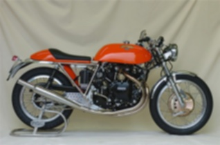 | 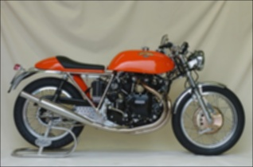 |
| Gaussian filter (large blur, grayscale) | 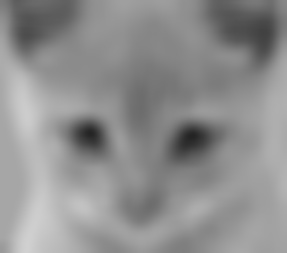 | |
| Sobel filter (grayscale) | 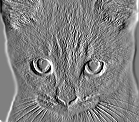 | 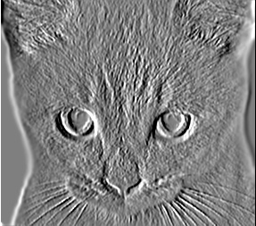 |
Hybrid image generation
To construct hybrid images, we remove high-frequencies from one image by applying a low-pass filter operation on it and vice-versa on the other image. The hybrid image is constructed by simple addition of both filtered images. However, it is important that the images be aligned and of same resolution to get a satisfactory result.
This requires some trial and error on figuring out the suitable cutoff frequency for a given pair of images.
low_frequencies = my_imfilter(image1, filter);
%%%%%%%%%%%%%%%%%%%%%%%%%%%%%%%%%%%%%%%%%%%%%%%%%%%%%%%%%%%%%%%%%%%%%%%%
% Remove the low frequencies from image2 by subtracting a blurred version of image2 from the original version of image2.
% This will give you an image centered at zero with negative values.
%%%%%%%%%%%%%%%%%%%%%%%%%%%%%%%%%%%%%%%%%%%%%%%%%%%%%%%%%%%%%%%%%%%%%%%%
blurred = my_imfilter(image2,filter);
high_frequencies = image2-blurred;
%%%%%%%%%%%%%%%%%%%%%%%%%%%%%%%%%%%%%%%%%%%%%%%%%%%%%%%%%%%%%%%%%%%%%%%%
% Combine the high frequencies and low frequencies
%%%%%%%%%%%%%%%%%%%%%%%%%%%%%%%%%%%%%%%%%%%%%%%%%%%%%%%%%%%%%%%%%%%%%%%%
hybrid_image = low_frequencies + high_frequencies;
Here are some resultant hybrid images:
Result 1 - Dog and Cat
Gaussian blur with standard deviation = 7 pixels (cutoff frequency)
| Low frequency | High frequency | Hybrid |
|---|---|---|
| 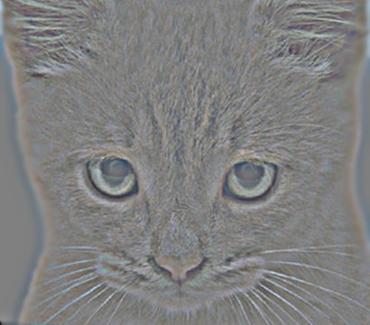 | 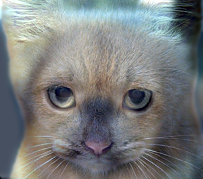 |
Result 2 - Marilyn and Eintein
Gaussian blur with standard deviation = 5 pixels (cutoff frequency)
| Low frequency | High frequency | Hybrid |
|---|---|---|
| 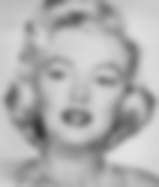 | 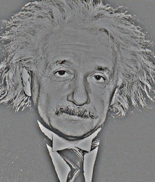 | 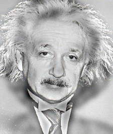 |
Result 3 - Plane and Bird
Gaussian blur with standard deviation = 8 pixels (cutoff frequency)
| Low frequency | High frequency | Hybrid |
|---|---|---|
| 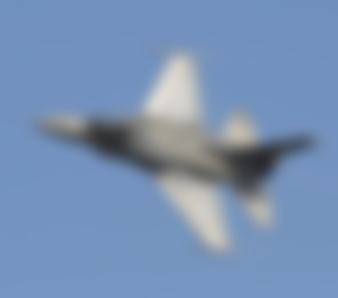 | 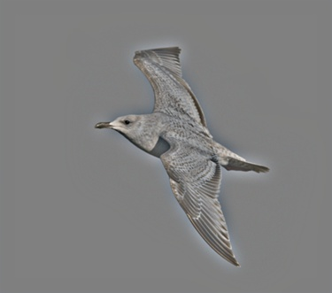 |
Bonus hybrid image
Result 4 - Matt Damon and Mark Wahlberg
Gaussian blur with standard deviation = 5 pixels (cutoff frequency)
| Low frequency | High frequency | Hybrid |
|---|---|---|
| 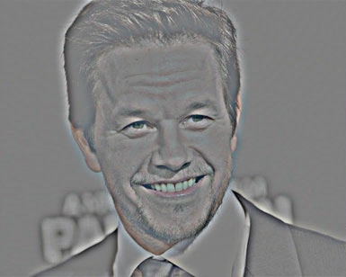 | 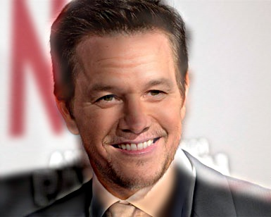 |
Image courtesy - http://www.sensacine.com/noticias/cine/noticia-18535723/